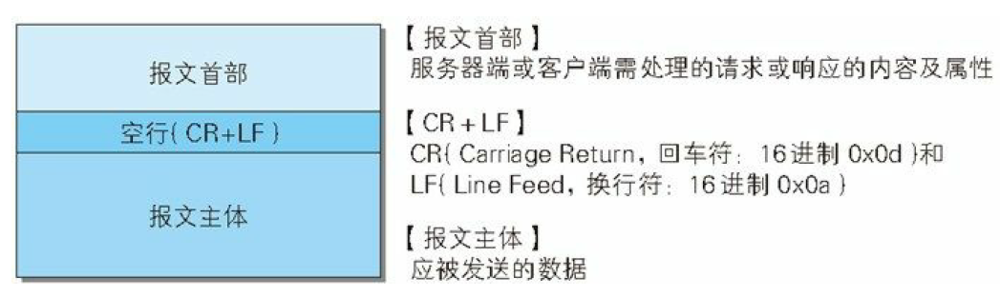
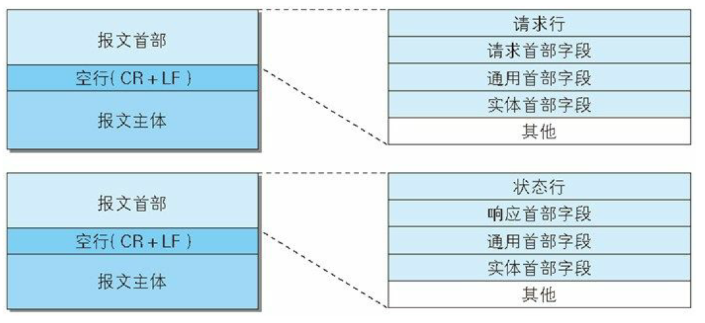
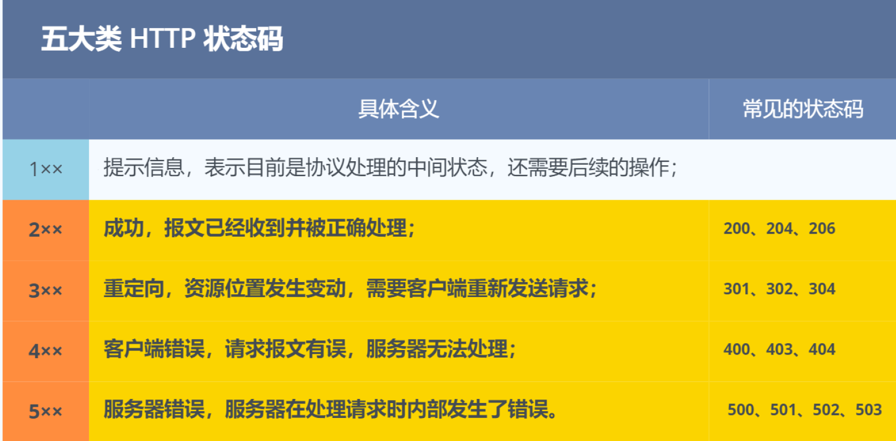

HTTP报文
1. 介绍
超文本传输协议 HyperText Transfer Protocol，HTTP 是 WEB 世界中最常用的协议，基于 TCP 协议，默认端口是 80。
HTTP 是无状态的协议，但使用 Cookie 和 Session 实现保持状态的功能。
本文主要介绍 HTTP 报文。
2. HTTP报文
用于 HTTP 协议交互的信息被称为 HTTP 报文，大致可分为报文首部 header 和报文主体 body 两部分，并由空行（CRLF）划分，HTTP 报文并不一定包含主体。

客户端的 HTTP 报文称为请求报文，请求报文的首部包括请求行和各种首部字段。服务端的称为响应报文，响应报文的首部包括状态行和各种首部字段。

3. 常见状态码

1xx
1xx 类状态码是一种中间状态，较少使用，一种使用方式是 HTTP GET和POST的区别 中提到的，上传文件时先传文件信息，服务端返回 100 再继续传输文件内容。
2xx
2xx 类状态码表示服务器成功处理了客户端的请求。
200 OK 是常见的状态码，表示一切正常。
204 No Content 与 200 基本相同，但响应中没有 body 数据。
3xx
3xx 类状态码代表资源发生了变动，客户端需要进行重定向。
301 Moved Permanently 表示永久重定向，需要使用新的 URL 访问。
302 Found 表示临时重定向，资源还在，但暂时需要用另一个 URL 访问。
301 和 302 会在响应头中使用
Location字段指明后续要跳转的 URL，浏览器自动跳转。
304 Not Modified 表示资源未修改，重定向到已经存在的缓存。
4xx
4xx 类状态码表示客户端发送的报文错误，服务端无法处理，属于客户端异常。
400 Bad Request 表示客户端发送的报文不符合服务端的格式要求。
401 Unauthorized 表示需要进行权限验证。
403 Forbidden 表示客户端的请求正确，但服务器禁止客户端访问该资源。
404 Not Found 表示请求的资源不存在。
5xx
5xx 表示客户端的请求报文正确，但是服务器处理时发生错误，属于服务端异常。
500 Internal Server Eroor，表示服务器内部错误，是个笼统通用的错误码。
501 Not Implemented 表示客户端请求的功能目前还不支持，通常是因为客户端使用了 HTTP 的拓展特性。
502 Bag Gateway 通常是服务器作为网关或代理时返回的错误码，表示服务器自身工作正常，但访问后端服务器发生了错误。
503 Service Unavailable 表示服务器当前很忙，暂时无法响应。
4. 常见首部字段
4.1 通用首部字段
Connection
该字段常用于客户端要求使用长连接，在 HTTP/1.1 后默认使用长连接，主要是为了兼容老版本，具体可见 HTTP发展史。
4.2 请求报文首部字段
Host
该字段用来指定服务器的域名，可以查找同一台服务器上的不同网站。
Accept
指明客户端能够处理的类型以及优先级。
Accept-Encoding
指明客户端能够使用的压缩算法。
Authorization
客户端携带的认证信息，通常在收到 401 状态码响应后设置该字段。
Cookie
客户端携带的 cookie。
4.3 响应报文首部字段
Content-Type
服务器回应本次数据的格式，通常是 Accept 字段中的一种。
Content-Length
表明服务器本次回应的数据长度。
Content-Encoding
表明数据采用的压缩方法，通过是 Accept-Encoding 字段中的一种。
Location
将响应接收方引导至某个与请求 URL 位置不同的资源，通常与 301、302 状态码配合使用。
Set-Cookie
服务器给客户端设置的 cookie。